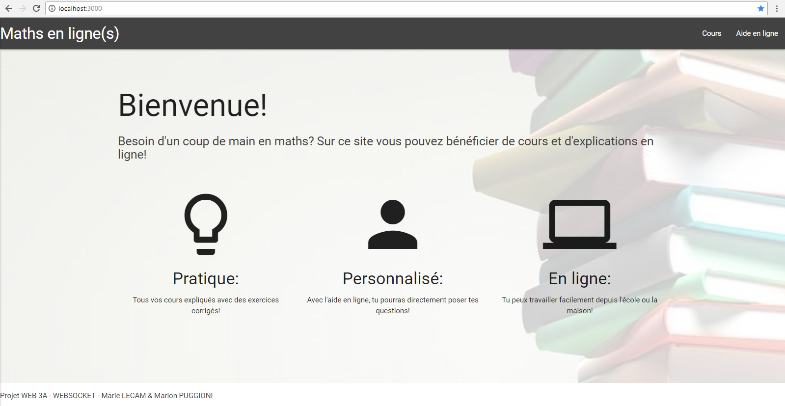
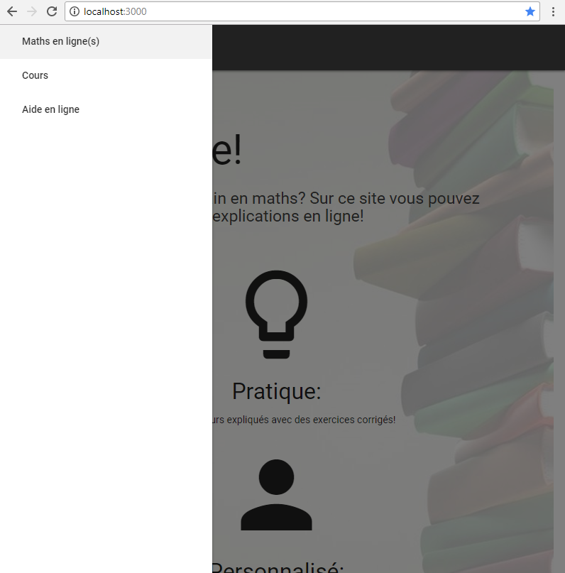
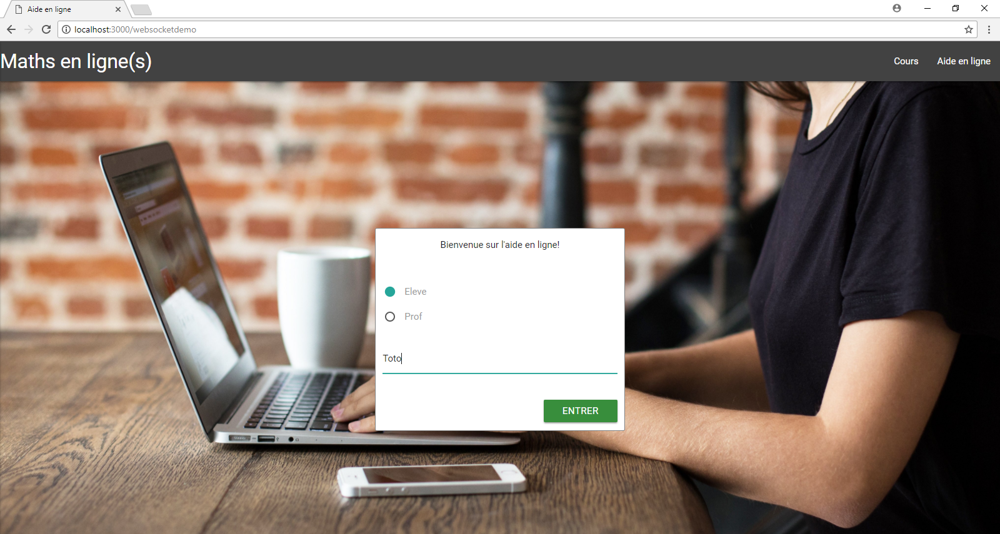
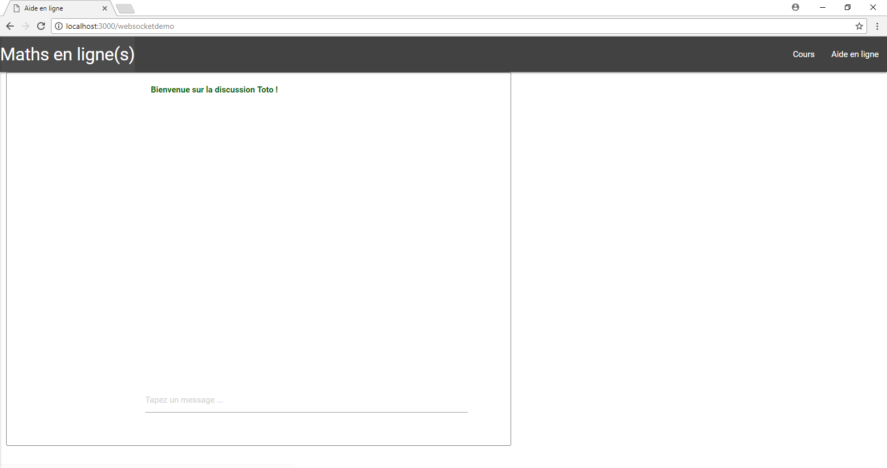
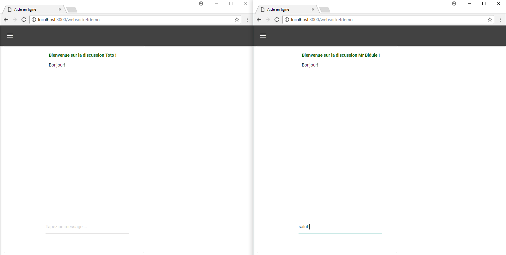

Tutoriel : comment faire un chat sur Node.js avec Socket.io?¶
Point de départ¶
1.Tout d’abord, il faut créer une structure de dossier adéquate (on peut faire ça facilement sur Atom avec New Folder, New File).
- projet
---- assets
------------- images
------------- main.css
------------- javascript.js
------------- socket.js
---- views
------------- partials
-------------------------- header_imports.ejs
-------------------------- js_import.ejs
-------------------------- navbar.ejs
------------- 404.ejs
------------- home.ejs
------------- websocketdemo.ejs
---- app.js
On a mis la tous les fichiers qui seront utiles au site entier, on va les remplir au fur et à mesure.
2.On va maintenant importer les librairies nécessaires. Remarque: on peut passer lors des “npm init”. On se place à la racine du projet avec la console, puis on fait:
npm init
npm install --save express
npm install --save ejs
cd .\assets\
npm init
npm install --save materialize-css
cd ..
Cela permet d’installer express, ejs, materialize et de les placer dans les “package.json”.
3.On commence par s’occuper du côté serveur: on ajoute le code suivant à app.js :
var express = require('express')
var app = express()
// Pour utiliser ejs:
app.set('view engine', 'ejs')
// Pour accéder aux fichiers 'static' comme les images:
app.use("/static", express.static(__dirname + '/assets'))
// On créé le chemin vers la page d'accueil qui est home.ejs
app.get('/', (request, response) => {
response.render("home")
})
// On créé le chemin vers l'aide en ligne qui est websocketdemo.ejs
app.get('/websocketdemo', (request, response) => {
response.render("websocketdemo")
})
// Si aucun des chemins précédents ne correspond, on envoie la page 404:
app.use(function (req, res, next) {
res.status(404).render("404")
})
port = 3000
app.listen(port, function() {
console.log("Listening on: http://localhost:" + port.toString())
})
Ce code permet de créer le côté serveur avec node.js. A ce stade, nous pouvons écrire dans la console à la racine du projet:
node app.js
et l’application nous répond bien: Listening on: http://localhost:3000 Si on va à cette adresse, rien ne s’affiche et c’est normal, car le fichier home.ejs est vide.
On peut quitter en faisant Ctrl + C.
4.On va maintenant s’occuper des fichiers .ejs : Commençons par home.ejs, on fait une page toute simple avec une navbar: (n’oubliez pas de sauvegarder au fur et à mesure!)
<html>
<head>
<meta charset="utf-8" />
<title>Maths en ligne</title>
<!--Permet d'inclure les imports pour la police, materialize et css-->
<% include partials/header_imports.ejs %>
</head>
<body>
<!--Permet d'inclure le menu-->
<% include partials/navbar.ejs %>
<div id="fond_home">
<div class="container">
<h1 class="header">Bienvenue!</h1>
<h5 class="grey-text text-darken-3 lighten-3">Besoin d'un coup de main en maths? Sur ce site vous pouvez bénéficier de cours et d'explications en ligne!</h5>
</br></br>
<div class="row" >
<div class="col l4 m12 s12">
<div class="row">
<div class="col s12" style="text-align:center">
<i class="material-icons" style="font-size: 150px">lightbulb_outline</i>
</div>
<div class="col s12" style="text-align:center">
<h4>Pratique:</h4> Tous vos cours expliqués avec des exercices corrigés!
</div>
</div>
</div>
<div class="col l4 m12 s12">
<div class="row">
<div class="col s12" style="text-align:center">
<i class="material-icons" style="font-size: 150px">person</i>
</div>
<div class="col s12" style="text-align:center">
<h4>Personnalisé: </h4> Avec l'aide en ligne, tu pourras directement poser tes questions!
</div>
</div>
</div>
<div class="col l4 m12 s12">
<div class="row">
<div class="col s12" style="text-align:center">
<i class="material-icons" style="font-size: 150px">computer</i>
</div>
<div class="col s12" style="text-align:center">
<h4>En ligne: </h4> Tu peux travailler facilement depuis l'école ou la maison!
</div>
</div>
</div>
</div>
</br></br></br></br></br>
</div>
</div>
<div class="section white" id="footer">
<p class="grey-text text-darken-3 lighten-3">Projet WEB 3A - WEBSOCKET - Marie LECAM & Marion PUGGIONI</p>
</div>
<!--Permet d'inclure les imports pour jquery, materialize et js-->
<% include partials/js_import.ejs %>
</body>
</html>
Il faut bien entendu remplir les fichiers partials: Dans navbar.ejs, on crée un menu responsive avec un onglet “Maths en ligne(s)” pour revenir à l’accueil, un onglet “Cours” que l’on ne va pas activer, et enfin l’onglet “Aide en ligne” ou nous mettrons nos démonstrations websocket:
<header>
<div class="navbar-fixed ">
<nav>
<div class="nav-wrapper">
<a href="#" data-activates="mobile-demo" class="button-collapse"><i class="material-icons">menu</i></a>
<ul class="left hide-on-med-and-down">
<li><a href="/" class="brand-logo" style="">Maths en ligne(s)</a></li>
</ul>
<ul class="right hide-on-med-and-down">
<li><a href="#">Cours</a></li>
<li><a href="/websocketdemo">Aide en ligne</a></li>
</ul>
</div>
</nav>
</div>
<ul class="side-nav" id="mobile-demo">
<li><a href="/" class="brand-logo" style="">Maths en ligne(s)</a></li>
<li><a href="#">Cours</a></li>
<li><a href="/websocketdemo">Aide en ligne</a></li>
</ul>
</header>
On a besoin de remplir le fichier javascript.js pour que lorsqu’on réduise l’écran, le menu s’affiche grâce à un bouton sur le côté:
// pour le menu sur le cote
jQuery( document ).ready(function($){
$('.button-collapse').sideNav({
closeOnClick: true
}
);
});
Dans js_import.ejs, on importe tout ce qui est fichier javascript:
<!-- Attention à respecter l'ordre d'appel des imports! -->
<script src="https://ajax.googleapis.com/ajax/libs/jquery/1.9.1/jquery.min.js"></script>
<script type="text/javascript" src="/static/node_modules/jquery/dist/jquery.min.js"></script>
<script type="text/javascript" src="/static/node_modules/materialize-css/dist/js/materialize.min.js"></script>
<script src="/static/javascript.js"></script>
Dans header_imports.ejs, on importe ce qui est nécessaire pour le css:
<!-- Attention à respecter l'ordre d'appel des imports! -->
<link href="https://fonts.googleapis.com/icon?family=Material+Icons" rel="stylesheet">
<link type="text/css" rel="stylesheet" href="/static/node_modules/materialize-css/dist/css/materialize.min.css" media="screen,projection"/>
<link rel="stylesheet" type="text/css" href="/static/main.css">
Notre 404.ejs:
<html>
<head>
<meta charset="utf-8" />
<title>404</title>
<link rel="stylesheet" type="text/css" href="/static/main.css">
</head>
<body>
<h1> Page 404 !</h1>
</body>
</html>
On s’occupe de websocketdemo.ejs qui pour l’instant est presque comme home.ejs:
<html>
<head>
<meta charset="utf-8" />
<title>Aide en ligne</title>
<!--Permet d'inclure les imports pour la police, materialize et css-->
<% include partials/header_imports.ejs %>
</head>
<body>
<!--Permet d'inclure le menu-->
<% include partials/navbar.ejs %>
<!--Permet d'inclure les imports pour jquery, materialize et js-->
<% include partials/js_import.ejs %>
</body>
</html>
On lance en tapant sur la console à la racine du projet:
node app.js
En allant sur chrome à cette adresse: localhost:3000 on peut voir notre site.
On va rajouter un peu de css. Dans le fichier main.css :
html{ min-height: 100%; position: relative; } body{ margin:0px; padding:0px; } div{ margin:0px; padding:0px; } h1{ margin-top:0px; padding-top: 80px; } /** * Accueil */ #fond_home{ position:relative; width:100%; min-height:90%; margin:0; padding:0; background-image:url('images/books_opacity.jpg'); background-position: center center; background-repeat: no-repeat; background-attachment: fixed; background-size: cover; } #footer{ padding: 0px; position: absolute; left: 0; bottom: 0; height: 50px; width: 100%; overflow:hidden; } /** *Navbar */ .nav-wrapper { background-color: #424242; } .nav-wrapper a:hover{ background-color: #505050; }
Il nous manque encore les images (elles ne sont pas toutes utiles pour cette partie-là du tuto mais on s’en occupe maintenant), il faut les télécharger et les mettre dans le dossier images avec le bon nom:
books_opacity.jpg :
online.jpg :
quadrillage.png :
Voici ce que vous devriez obtenir:
Page principale:
Navigation sur le côté:
Normalement lorsqu’on appuie sur Cours rien ne se passe et sur Aide en ligne il n’y a que la navbar. Si on se trompe dans l’adresse par exemple: http://localhost:3000/coucou il y a écrit « Page 404! ». Quand on a fini on quitte sur la console avec : Ctrl + C. Avec ceci on a une bonne base pour commencer avec Socket.io!
Intégration de Socket¶
1. On va tout d’abord initialiser la connection. On va maintenant utiliser Socket.io. On commence par l’installer sur la console à la racine du projet:
npm install --save socket.io
Pour le côté serveur, on ajoute à app.js socket.io les lignes suivantes pour pouvoir utiliser socket.io:
var http = require('http').Server(app);
var io = require('socket.io')(http);
et après les appels à “app”:
io.on('connection', function(socket){
console.log('a user connected');
});
Afin que le serveur soit réceptif lorsque quelqu’un veut entamer une connexion.
On modifie également la fin du fichier, le “app.listen” devient “http.listen”:
http.listen(port, function() {
console.log("Listening on: http://localhost:" + port.toString())
})
Ce qui nous donne pour le fichier app.js :
var express = require('express')
var app = express()
var http = require('http').Server(app);
var io = require('socket.io')(http);
// Pour utiliser ejs:
app.set('view engine', 'ejs')
// Pour accéder aux fichiers 'static' comme les images:
app.use("/static", express.static(__dirname + '/assets'))
// On créé le chemin vers la page d'accueil qui est home.ejs
app.get('/', (request, response) => {
response.render("home")
})
// On créé le chemin vers l'aide en ligne qui est websocketdemo.ejs
app.get('/websocketdemo', (request, response) => {
response.render("websocketdemo")
})
// Si aucun des chemins précédents ne correspond, on envoie la page 404:
app.use(function (req, res, next) {
res.status(404).render("404")
})
// Ecoute les évènements 'connection' qui arrivent et affiche un message à la console
io.on('connection', function(socket){
console.log('a user connected');
});
port = 3000
http.listen(port, function() {
console.log("Listening on: http://localhost:" + port.toString())
})
Pour le côté client (navigateur): On ajoute l’importation de socket.io.js et de jquery-1.11.1.js au fichier js_import.ejs ce qui nous donne dans le bon ordre:
<!-- Attention à respecter l'ordre d'appel des imports! -->
<script src="https://ajax.googleapis.com/ajax/libs/jquery/1.9.1/jquery.min.js"></script>
<script src="https://code.jquery.com/jquery-1.11.1.js"></script>
<script type="text/javascript" src="/static/node_modules/jquery/dist/jquery.min.js"></script>
<script type="text/javascript" src="/static/node_modules/materialize-css/dist/js/materialize.min.js"></script>
<script src="/socket.io/socket.io.js"></script>
<script src="/static/javascript.js"></script>
Et on ouvre la connection côté navigateur dans le fichier socket.js ou l’on va mettre tout ce qui permet de faire marcher le chat:
var socket = io();
On appelle ensuite ce fichier à la fin de websocketdemo.ejs juste après le “<% include partials/js_import.ejs %>”:
<script src="/static/socket.js"></script>
A ce stade, si on lance le serveur et qu’on ouvre le site sur le navigateur sur l’onglet Aide en ligne, à chaque fois qu’on relance la page ou qu’on ouvre une nouvelle fenêtre avec le site sur cet onglet ‘a user connected’ s’affiche sur la console. Pour ajouter aussi un log lors de la déconnexion on rajoute les lignes suivantes en dessous le “console.log(“a user connected”);” toujours dans le io.on dans le fichier app.js:
//Pour afficher quand un utilisateur se deconnecte
socket.on('disconnect', function(){
console.log('user disconnected');
});
On peut refaire la manipulation précédente et voir “user disconnected” quand on quitte l’onglet.
2.On va maintenant créér la structure du chat et apprendre à envoyer des messages. On s’occupe du html, on rajoute ce bout de cote dans websocketdemo.ejs:
<div class="row" id="screen2">
<div class="col s7">
<div class="divcolored">
<div class="row">
<div class="col s3">
<form action="" id="listusers">
</form>
</div>
<div class="col s9" >
<div class="row">
<div class="col s12" >
<ul id="messages"></ul>
</div>
<div class="col s11" >
<form action="" id="inputmessage">
<input id="m" autocomplete="off" placeholder="Tapez un message ..."/>
</form>
</div>
</div>
</div>
</div>
</div>
</div>
</div>
et du css dans main.css:
/**
*Chat
*/
#inputmessage{
}
#m{
width: 100%;
}
#messages {
list-style-type: none;
height: 80%;
overflow: auto;
word-wrap: break-word;
}
#messages li { padding: 5px 10px; }
.divcolored{
height: 85%;
border: solid 1px grey;
border-radius: 3px;
background-color:white;
position: relative;
}
/**
*Utilisateurs
*/
#listusers{
margin-top: 0px;
height: 100%;
overflow-y: auto;
overflow-x: hidden;
}
.chip{
overflow: hidden;
}
Si vous lancer le site vous verrez dans Aide en ligne l’espace dédié au chat. Dans app.js dans le io.on, on va demander au serveur lorsqu’il reçoit un objet de type “chat message” de la part d’un des utilisateurs de le renvoyer à tous les utilisateurs:
socket.on('chat message', function(obj){
io.emit('chat message', obj);
});
Quand au côté client dans socket.js, dès qu’un message est tapé, il va l’envoyer au serveur, et dès qu’un message est reçu de la part du serveur, il va l’afficher:
$(function () {
var socket = io();
$('#inputmessage').submit(function(){ // Pour envoyer un message sur le chat
var input = $('#m').val();
$('#m').val('');
socket.emit('chat message', input); // On envoie le message au serveur qui s'occupera d'addresser le message a la bonne personne
return false;
});
socket.on('chat message', function(myObj){ // Quand on recoit un message destine a tout le monde retransmis par le serveur
$('#messages').append($('<li>').text(myObj)); // On l'ajoute au chat
// Pour scroll automatiquement vers le bas:
var elem = document.getElementById('messages');
elem.scrollTop = elem.scrollHeight;
});
});
Si vous relancer la page sur plusieurs onglets pour simuler plusieurs utilisateurs, vous pourrez constater que l’on arrive bien à envoyer des messages à tout le monde. Si vous réactualisez un des onglets, toute la discussion est perdue: c’est une nouvelle connection. On va s’amuser à faire quelques tests (penser à relancer le serveur à chaque fois sur la console):
- on va essayer le broadcast. Il suffit de remplacer « io.emit(“chat message”, obj); » par « socket.broadcast.emit(“chat message”, obj); » dans app.js. Tout le monde reçoit nos messages sauf nous-même!
- maintenant, on ne va envoyer des messages qu’à nous même en remplaçant « socket.broadcast.emit(“chat message”, obj); » par « socket.emit(“chat message”, obj); ».
Maintenant qu’on a compris comment ça fonctionne, on peut remettre io.emit, ce qui est le plus adapté pour un chat.
Fonctionnalités du chat¶
1.Maintenant, on veut permettre aux gens de pouvoir se connecter avec des pseudos. On va donc avant d’afficher le chat afficher un formulaire de connection. Voici le html qui est à rajouter dans websocketdemo.ejs juste avant ce qu’on a mis précédemment:
<div class="row" id="screen1">
<div class="image">
<div class="col s4 offset-s4" id="formulaire">
<p> Bienvenue sur l'aide en ligne! <p>
</br>
<form action="" id="inputname">
<p>
<input name="group1" type="radio" id="e" required="required" value="eleve"/>
<label for="e">Eleve</label>
</p>
<p>
<input name="group1" type="radio" id="p" required="required" value="prof"/>
<label for="p">Prof</label>
</p>
</br>
<input id="mbis" autocomplete="off" placeholder="Entrez un pseudo!" required="required" />
</br></br>
<button type="submit" class="waves-effect waves-light btn green darken-2" id="submitbutton"> Entrer </button>
</form>
</div>
</div>
</div>
et le css dans main.css:
/**
*Formulaire
*/
#formulaire{
border: solid 1px;
border-color: grey;
border-radius: 3px;
width: 400px;
height: 325px;
position: absolute;
top:0;
bottom: 0;
left: 0;
right: 0;
margin: auto;
background-color: white;
text-align: center;
}
#submitbutton{
float: right;
}
.image{
position:fixed;
width:100%;
height:100%;
margin:0;
padding:0;
background-image:url('images/online.jpg');
background-position: center center;
background-repeat: no-repeat;
background-attachment: fixed;
background-size: cover;
}
Si vous afficher maintenant, tout se superpose, c’est normal! On va gérer l’apparition des div avec javascript. Pour cela, on va dans socket.js: On rajoute d’abord au début une fonction qui va gérer les valeurs des radiobuttons en dehors de la fonction principale. Puis dans la fonction principale, on va tout d’abord afficher le formulaire et masquer le chat. On va creer un bloc qui nous permet de recuperer les données du formulaire et de les envoyer au serveur. Le serveur va les traiter. Soit il nous renvoie l’information que le nom est deja pris et on affiche un toast pour que l’utilisateur essaie un nouveau pseudo, soit le nom est libre et on lui affiche le chat ou il peut envoyer des messages. Voici ce que cela donne:
/*
Fonction qui renvoie la valeur associee au radio button coche
*/
function getRadioVal(form, name) {
var val;
// get list of radio buttons with specified name
var radios = form.elements[name];
// loop through list of radio buttons
for (var i=0, len=radios.length; i<len; i++) {
if ( radios[i].checked ) { // radio checked?
val = radios[i].value; // if so, hold its value in val
break; // and break out of for loop
}
}
return val; // return value of checked radio or undefined if none checked
}
$(function () {
var socket = io(); // On initie une nouvelle session
var myName = ""; // Variable pour connaitre le nom de la personne
// Pour faire apparaitre l'ecran de connexion
$('#screen2').hide();
$('#screen1').show();
$('#inputname').submit(function(){ // Quand on recoit les donnees du formulaire de connexion
var myObj = { "name": $('#mbis').val(), "status":getRadioVal(document.getElementById('inputname'), 'group1')}; // On met les donnees dans un dico
socket.emit('user name', myObj); // On les envoie au serveur
$('#mbis').val(''); // On nettoie le formulaire
return false;
});
socket.on('wrong name', function(myObj){ // Si le serveur nous repond que le nom est deja pris
Materialize.toast('Ce pseudo a déjà été pris!', 4000) // On affiche un message a l'utilisateur de tenter un autre nom
$('#mbis').val('');
});
socket.on('username available', function(name){ // Si le nom est libre
// On affiche le chat :
$('#messages').empty();
$('#screen1').hide();
$('#screen2').show();
myName = name; // On recupere le nom
$('#messages').append($('<li style="color:DarkGreen;font-weight:bold;">').text("Bienvenue sur la discussion "+name+" !")); // On affiche un message de bienvenue à la personne qui vient de se connecter
});
$('#inputmessage').submit(function(){ // Pour envoyer un message sur le chat
var input = $('#m').val();
$('#m').val('');
socket.emit('chat message', input); // On envoie le message au serveur qui s'occupera d'addresser le message a la bonne personne
return false;
});
socket.on('chat message', function(myObj){ // Quand on recoit un message destine a tout le monde retransmis par le serveur
$('#messages').append($('<li>').text(myObj)); // On l'ajoute au chat
// Pour scroll automatiquement vers le bas:
var elem = document.getElementById('messages');
elem.scrollTop = elem.scrollHeight;
});
});
Et voici la partie socket du app.js associé: on rajoute des listes qui vont retenir les sockets et les status de tous les utilisateurs qui vont se connecter, et on va gérer la connection grâce au « socket.on(“user name”), … ». En effet, soit le nom existe deja dans notre liste donc on previent le client que le nom est deja pris, soit on l’ajoute aux listes et on le previent que le nom est libre. A la fin, quand le client se deconnecte, on n’oublie pas de le supprimer des listes:
// Variables communes a tous les utilisateurs
var dicostatus = {"Tous": ""}; // Associe a un nom le statut (prof ou eleve)
var dicosocket = {}; // Associe a un nom le socket associe a ce nom
// Ecoute les évènements 'connection' qui arrivent et affiche un message à la console
io.on('connection', function(socket){
console.log('a user connected');
// Variable associee a chaque utilisateur
var name;
socket.on('chat message', function(obj){
console.log(name + ' : ' + obj);
io.emit('chat message', obj);
});
socket.on('user name', function(msg){// Quand une personne est sur l'ecran de connexion
var name_existing = false; // On ne veut pas lui redonner le meme pseudo qu'une personne deja connectee
for (var i in dicostatus){
if (i == msg.name){ // Si le nom existe deja
// socket.emit : on envoie qu'a celui qui envoie
socket.emit('wrong name', name); // On signale a socket.js que ce nom existe deja
name_existing = true;}
}
if (!name_existing){ // Si le nom n'existe pas
name = msg.name; // On attribue a la variable 'name' le nom que la personne a choisi
dicostatus[name] = msg.status; // On met le statut qu'elle a indique dans le dicostatus
dicosocket[name] = socket; // On rajoute son socket dans le dicosocket pour que les gens puissent s'addresser a elle en privee
console.log('user name: ' + name +' (' + msg.status + ')');
//on envoie qu'a celui qui envoie
socket.emit('username available', name); // On signale que le nom est bon
console.log(dicostatus);
}
});
socket.on('disconnect', function(){ // A la deconnexion d'un utilisateur
console.log(name + ' disconnected');
delete dicosocket[name]; // On supprime la personne des dictionnaires
delete dicostatus[name];
});
});
port = 3000
http.listen(port, function() {
console.log("Listening on: http://localhost:" + port.toString())
})
Vous pouvez tester le site en vous connectant/ deconnectant avec plusieurs utilisateurs sur differents onglets, vous envoyer des messages, et voir au fur et à mesure ce qui s’affiche sur la console.
Voici ce que cela donne à ce stade:
Le formulaire :
Le page à l’arrivée sur le chat :
Début de conversation :
- 2.A partir de maintenant, il devient facile de rajouter des fonctionnalités spécifiques au chat. Par exemple, on peut:
- ajouter un petit message lorsqu’une personne se connecte ou se déconnecte.
- spécifier le nom de la personne qui parle
- afficher la liste des personnes connectées
- parler à un personne en privé
- rajouter un canvas en fond pour pouvoir dessiner, qui se gère de la même façon que les messages, seule le contenu de la transmission changeant (on a des coordonnées et non du texte)
- …
Toutes ces fonctionnalités ont été implémentées et commentées, le code final est dans la partie « code » du tuto!